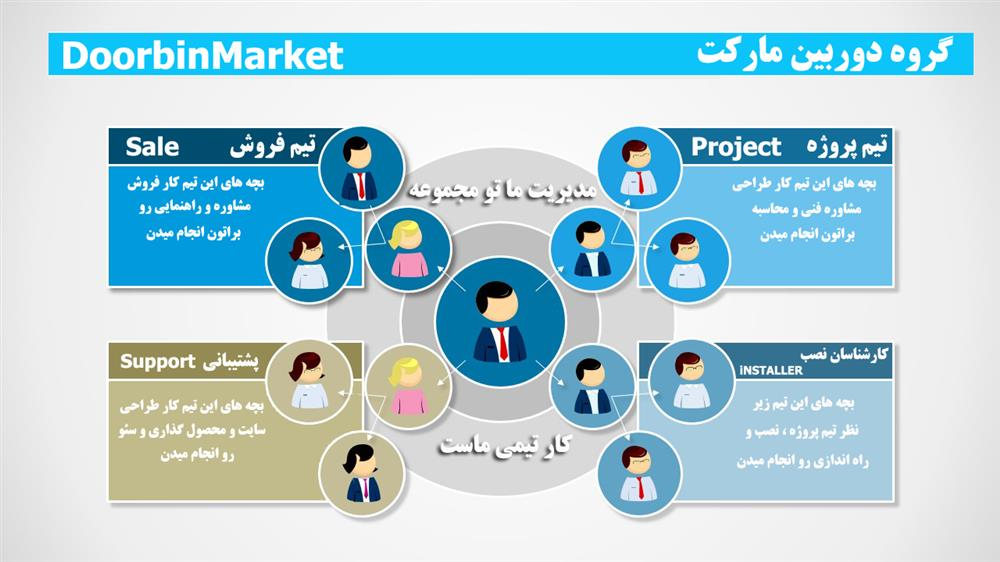

درباره ما

در سال 1389 یک تیم تحصیل کرده در زمینه شبکه و دوربین مداربسته کنار هم جمع شدیم و کار فروش دوربین مدار بسته و تجهیزات شبکه رو شروع کردیم ، گروه ما با تمام مشکلات در زمینه رقابت با رقیب های معتبر تونست با احترام به نیاز های مشتری و هزینه های مناسب پروژه های بزرگ تا کوچیک رو با موفقیت انجام بده.
تیم ما هیچوقت فراگیری آموزش رو فراموش نکرده و همیشه با پیشرفت تکنولوژی تونسته خودش رو با شرایط به روز کنه ، و در کنار تمام موفقیت های موجود بحث اعتماد مشتری و کارفرما برامون از همه چی مهمتر بوده. کلیت ماجرای شروع کار ما از سال 89 فروش و تجهیز و نصب دوربین مداربسته و اجرای پسیو واکتیو شبکه تو شرایط محدود تبلیغاتی و رقابتی بود تا اینکه سال 92 تیم حرفه ای طراحی سایتمون ، با اجرا و طراحی سایت دوربین مارکت و صرف وقت و تلاش مستمر تونست بین رقبای عزیزمون به سطح مطلوبی از پیشرفت و فروش و نصب و راه اندازی از طریق سایت دوربین مارکت برسه.
کلا موفقیت تو هر زمینه ای ابتدا نیاز به آگاهی و درک شرایط و نیاز های یک جامعه رو در بر میگیره.
گروه و تیم دوربین مارکت شامل بخش های مختلفی که مهترین اونا رو میشه به گروه فروش دوربین مداربسته و تجهیزات شبکه ، گروه طراحان سایت ، گروه سئو و پشتیبانی سایت ، گروه پروژه ها و گروه کارشناسان نصب تقسیم کرد.همه بچه ها و گروه ها در کنار هم با روحیه ای تیمی برای هر چه بهتر شدن و پیشرفت تلاش میکنند.
هدف اصلی ما هیچوقت فروش و درآمد مطلق نبوده و ما دنبال این بودیم که تمام مشتری ها رضایت کامل رو از تجهیزات، نوع برخورد ، و انجام درست اجرا رو داشته باشن. برای ما فروش نقطه پایان نیست و بعد از فروش یه محصول دوست داریم کنار مشتری باشیم تا اعتماد به ما همیشگی باشه.
هدف بعدی تیم ما این بوده بهترین محصول و خدمات و گارانتی و قیمت مناسب رو به مشتری هامون ارائه بدیم، و قیمت ها رو در حد مطلوب با توجه به شرایط محیطی ثابت نگه داریم.
تو کلیت ماجرای دوربین مارکت ، افتخار ما همیشه جلب نظر مشتری بوده و همیشه از داشتن رقیب های خوب در زمینه فعالیت خودمون لذت بردیم چون رقابت باعث پیشرفت یه تیم تو هر زمینه ای برای تحلیل و ارتقای اون مجموعه میشه.
با خوش امدگویی به شما سروران گرامی افتخار میکنیم برای تامین امنیت و نیاز های شبکه و تجهیزات در کنار شما هستیم . وتیم دوربین مارکت تمام تلاشش رو میکنه بهترین مشاوره و خرید رو به شما ارائه بده. هنوز در ابتدای راهیم تا در کنار هم موفقیت رو تجربه کنیم.